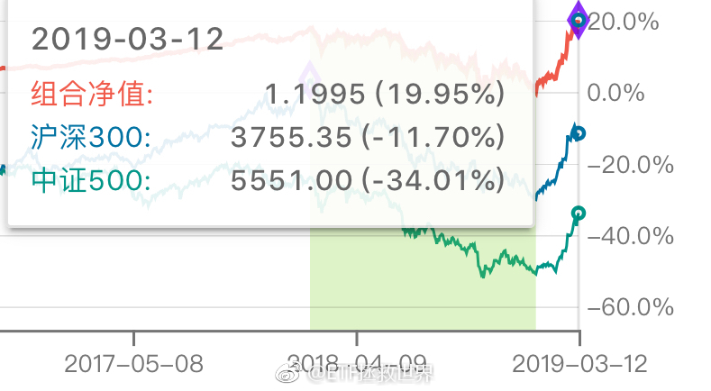

说半年就半年，童叟无欺//@ETF拯救世界:回复@不再逃离1995:今天跌半年工资。踏踏实实的//@不再逃离1995:昨天收益3个月工资//@ETF拯救世界:回复@你好大麦茶:也算为很多家庭幸福夫妻和睦做出了一点小小的贡献。@ETF拯救世界:跑赢沪深300的幅度增大至32%。领先中证500的幅度缩小至54%。如果可以让我把货基部分哪怕做做逆回购，总收益率也可以突破25%了。 
回复@早点起床吃早点:希望今年尤文夺冠//@早点起床吃早点:有看足球的吗？ 昨晚c罗好牛逼！足球界的益达@ETF拯救世界:还有一个数学问题大家也许没有考虑过。如果过去你的收益率是500%，那么涨20%就变成了600%。如果你过去的收益率是十倍，那么涨20%就变成了12倍，涨100%就是二十倍。再涨100%就是40倍。这就是熊市不赔钱的魔力。
回复@不再逃离1995:今天跌半年工资。踏踏实实的//@不再逃离1995:昨天收益3个月工资//@ETF拯救世界:回复@你好大麦茶:也算为很多家庭幸福夫妻和睦做出了一点小小的贡献。//@你好大麦茶:我昨天把账户收益率给老公看，居然被评价为股神，谢谢E大，让小白成为了时间的朋友@ETF拯救世界:跑赢沪深300的幅度增大至32%。领先中证500的幅度缩小至54%。如果可以让我把货基部分哪怕做做逆回购，总收益率也可以突破25%了。
还有一个数学问题大家也许没有考虑过。如果过去你的收益率是500%，那么涨20%就变成了600%。如果你过去的收益率是十倍，那么涨20%就变成了12倍，涨100%就是二十倍。再涨100%就是40倍。这就是熊市不赔钱的魔力。
回复@你好大麦茶:也算为很多家庭幸福夫妻和睦做出了一点小小的贡献。//@你好大麦茶:我昨天把账户收益率给老公看，居然被评价为股神，谢谢E大，让小白成为了时间的朋友@ETF拯救世界:跑赢沪深300的幅度增大至32%。领先中证500的幅度缩小至54%。如果可以让我把货基部分哪怕做做逆回购，总收益率也可以突破25%了。